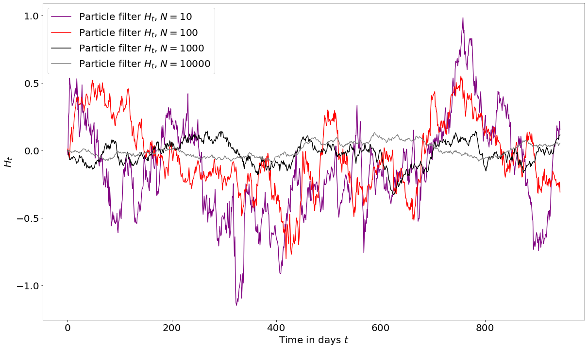

class: center, middle # Approximation Algorithms for the Routing and Wavelength Assignment problem --- # Content # 222 ### 1. Introduction 2. Problem Formulation 3. Mathematical background 4. Algorithms 5. Results 6. Conclusion 7. Discussion and Reflection --- # Introduction --- # Problem formulation <div >  </div> --- # Introduction ---